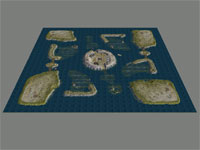
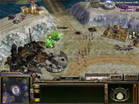
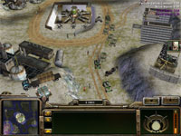
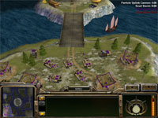
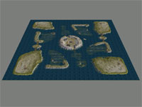
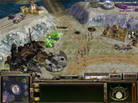
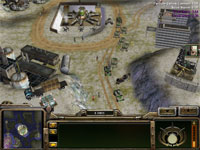
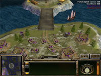

   
   Download this map for Generals Zero Hour or Generals
Minken: "&#%% you
can make good-looking maps for this game!"
This is my first map. I had no clue how to apply textures when I started working
on this one - and when I finally found that nifty paint brush I couldn't help
myself but painting a lot! The result was a few 3-way blended textures which
isn't really optimal. I have reworked the textures in release 3.
The map consists of a number of islands, connected through bridges or roads.
Each player start in a corner of the map. There are two entrances to each base.
The central part of the map is a volcanic island - a huge crater. It's a terrorist
outpost for production of anthrax, now under UN surveilance. There is a scud
storm site in the middle of it that players can capture to launch a blasting
early surprise after four minutes of playing. There are also other very valuable
buildings on the central island; a particle cannon, an oil derrick, an oil refinery,
a hospital, GLA barracks and arms dealer, and a black market - "everything
the body needs" :)
However, it will be hard to hold the central parts against several enemies.
There are a few buildings throughout the map for your rocket soldiers to occupy,
and there are some civilian cars for your GLA suiciders too.
Each base starts out with one supply dock, and three suply piles. Beside the central treasures, each base has the same distance to additional oil derricks, and some UN supplies. There is a supply drop zone on the central island as well, but I don't think it is capturable. It contributes to the overall look of the map, with the C130 aircraft sweeping overhead.
Since large portions of the map consists of water, a strong airforce is a plus. However, it would take quite some time to build, and there is not a lot of space where you start out for those airfields. Securing the bridges and water crossings with bunkers and artillery works very well. You can even rush to middle to capture the scud site, but I can promise it won't go unnoticed. You would also have to wait before you could launch it if you are too quick. If you manage to hold the central parts, you have a great advantage. Capture the GLA arms dealer and you can produce more vehicles without building further. The mountain sides can be protected from the top of the hills with anti-air forces. It can be difficult to launch an attack on the ground due to the narrow water crossings.
The AI works ok with this map but not great. One starting position sometimes have troubles (I think lower left corner) but the other three work as intended. Your base may be attacked from both sides, depending on what path the computer choses. The central island is considered a key position, and the computer will send tanks to guard it early in the game. Both oil derricks and the hospital are known to be captured by the computer. The scud storm and other buildings are not.